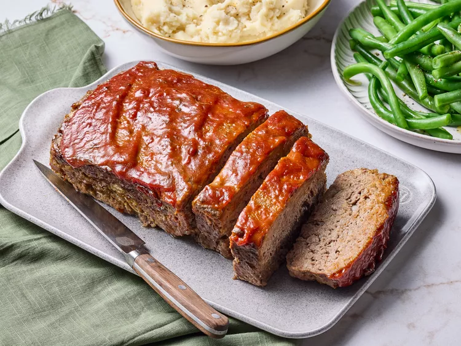

Easy Meatloaf
Home

How to Make Meatloaf
You'll find a detailed ingredient list and step-by-step instructions in
the recipe below, but let's go over the basics:
Meatloaf Ingredients
These are the simple ingredients you'll need to make this homemade
meatloaf recipe:
-
For the loaf: ground beef, an egg, an onion, milk,bread
crumbs, salt, and pepper
- For the sauce: ketchup, brown sugar, and mustard
How to make meatloaf at Home
Here's bried overview of what you can expect when you make meatloaf from
scratch:
- Mix the loaf ingredients, then transfer to a loaf pan.
- Mix the sauce ingredients, then pour over the loaf.
-
Bake in the preheated oven until the meatloaf is no longer pink in the
center.